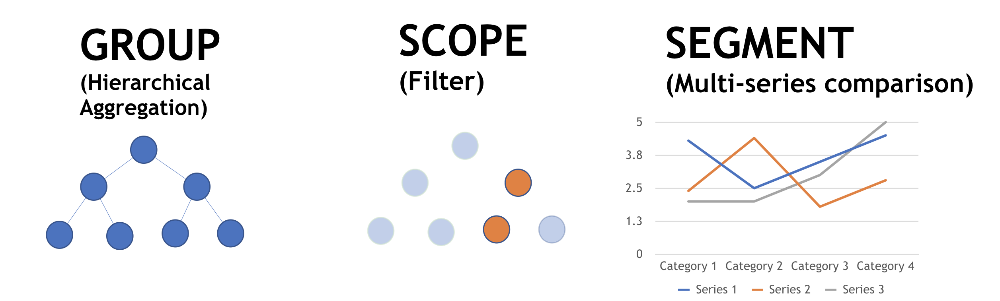

Grouping, Scoping, and Segmenting Metrics
Data aggregation and filtering in Sysdig Monitor is done through the use of assigned labels. The sections below explain how labels work, the ways they can be used, and how to work with groupings, scopes, and segments.
Labels
Labels are used to identify and differentiate characteristics of a metric, allowing them to be aggregated or filtered for Explore module views, dashboards, alerts, and captures. Labels can be used in three different ways:
To group infrastructure objects into logical hierarchies displayed on the Explore tab (called groupings). For more information, refer to the Groupings section below.
To filter out data. For more information, refer to the Scopes section below.
To split aggregated data into segments. For more information, refer to the Segments section below.
|  |
There are two types of labels:
Infrastructure labels
Metric descriptor labels
Infrastructure Labels
Infrastructure labels are used to identify objects or entities within the infrastructure that a metric is associated with, including hosts, containers, and processes. An example label is shown below:
kubernetes.pod.name
The table below outlines what each part of the label represents:
Example Label Component | Description |
|---|---|
| The infrastructure type. |
| The object. |
| The label key. |
Infrastructure labels are obtained from the infrastructure (including from orchestrators, platforms, and the runtime processes), and Sysdig automatically builds a relationship model using the labels. This allows users to create logical hierarchical groupings to better aggregate the infrastructure objects in the Explore module.
For more information on groupings, refer to the Groupings.
Metric Descriptor Labels
Metric descriptor labels are custom descriptors or key-value pairs applied directly to metrics, obtained from integrations like StatsD, Prometheus, and JMX. Sysdig automatically collects custom metrics from these integrations, and parses the labels from them. Unlike infrastructure labels, these labels can be arbitrary, and do not necessarily map to any entity or object.
Note
Metric descriptor labels can only be used for segmenting, not grouping or scoping.
An example metric descriptor label is shown below:
website_failedRequests:20|region=‘Asia’, customer_ID=‘abc’
The table below outlines what each part of the label represents:
Example Label Component | Description |
|---|---|
| The metric name. |
20 | The metric value. |
region='Asia', customer_ID='abc' | The metric descriptor labels. Multiple key-value pairs can be assigned using a comma separated list. |
Warning
Sysdig recommends not using labels to store dimensions with high cardinalities (numerous different label values), such as user IDs, email addresses, URLs, or other unbounded sets of values. Each unique key-value label pair represents a new time series, which can dramatically increase the amount of data stored.
Groupings
Groupings are hierarchical organizations of labels, allowing users to organize their infrastructure views on the Explore tab in a logical hierarchy. An example grouping is shown below:
The example above groups the infrastructure into four levels. This results in a tree view in the Explore module with four levels, with rows for each infrastructure object applicable to each level.
As each label is selected, Sysdig Monitor automatically filters out labels for the next selection that no longer fit the hierarchy, to ensure that only logical groupings are created.
Note
In earlier Sysdig Monitor releases, users could create arbitrary hierarchies, which led to inaccurate data.
The example below shows the logical hierarchy structure for Kubernetes:
Clusters and Nodes (
cluster.name > node.name > pod.name > container.name)Deployments (
cluster.name > namespace.name > deployment.name > pod.name > container.name)Services (
cluster.name > namespace.name > service.name > pod.name > container.name)Statefulsets (
cluster.name > namespace.name > statefulset.name > pod.name > container.name)Daemonsets (
cluster.name > namespace.name > daemonset.name > pod.name > container.name)ReplicaSets (
cluster.name > namespace.name > deployment.name > replicaset.name > pod.name)HPAs (
cluster.name > namespace.name > hpa.name > pod.name > container.name)
The new default grouping has been introduced in v2.4.0 and is available to the new teams you create. The default groupings are immutable: They cannot be modified or deleted. However, you can make a copy of them that you can modify.
Search for a Grouping
To search for, or switch to, an existing grouping:
From the Explore module, open the
Groupingsdrop-down list.Note
Sysdig Monitor automatically hides configured groupings that are inapplicable to the current infrastructure. To review these groupings, click the
Show X Inapplicable Grouping/slink.Either select the desired grouping or search for it by scrolling down the list or using the search bar, then select it.
Create a New Grouping or Edit an Existing Grouping
To create a new grouping, or edit an existing grouping:
Optional: Click the
Closeicon on each unnecessary label in the current grouping.Note
Groupings must have at least one label; when there is only one label, the
Closeicon is hidden.On the Explore tab, open the first level grouping drop-down menu.
Select the desired top-level label, or search for it by scrolling or using the search bar, then select it.
Optional: To add additional grouping levels, click the Add Grouping (plus) button beside the previous grouping, and repeat step 3.
Repeat until there are no further layers available in the infrastructure label hierarchy.
Open the
Groupingsdrop-down list.Select the
Save Current Groupingoption.Define a name for the grouping, and click the
Save(tick) icon to save the grouping.
Rename a Grouping
To rename a grouping:
From the Explore module, open the
Groupingsdrop-down list.Highlight the relevant grouping and click the
Show Grouping actionsbutton.Select the
Rename(pencil) icon:Note
The default groupings cannot be renamed.
Define the new name, and click the
Save(tick) icon to save the changes.
Share a Grouping with the Active Team
Custom groupings can be shared to all users in the active team:
From the Explore module, open the
Groupingsdrop-down list.Highlight the relevant grouping and click the
Show Grouping actionsbutton.Click the
Share Grouping(person) icon:Note
The default groupings cannot be shared.

Toggle the
Share with Teamswitch to make the grouping available for all users in the active team.
Copy a Grouping to a Different Team
Groupings cannot be shared between different teams, but they can be copied from the current team to one or more other teams:
From the Explore module, open the
Groupingsdrop-down list.Highlight the relevant grouping and click the
Show Grouping actionsbutton:Click the
Copy Grouping(paper) icon:Note
The default groupings cannot be copied.
Open the
Copy todrop-down menu, and select the team/s to copy the grouping to:Optional: Rename the grouping as necessary.
Click the
Send copybutton to save the new grouping.
Delete a Grouping
To delete a grouping:
From the Explore module, open the
Groupingsdrop-down list.Highlight the relevant grouping and click the
Show Grouping actionsbutton.Select the
Delete Grouping(trash) icon:Click the
Yes, delete groupingbutton to confirm the change.
Scopes
A scope is a collection of labels that are used to filter out or define the boundaries of a group of data points when creating dashboards, dashboard panels, alerts, and teams. An example scope is shown below:
 |
In the example above, the scope is defined by two labels with operators and values defined. The table below defines each of the available operators.
Operator | Description |
|---|---|
is | The value matches the defined label value exactly. |
is not | The value does not match the defined label value exactly. |
in | The value is among the comma separated values entered. |
not in | The value is not among the comma separated values entered. |
contains | The label value contains the defined value. |
does not contain | The label value does not contain the defined value. |
The scope editor provides dynamic filtering capabilities. It restricts the scope of the selection for subsequent filters by rendering valid values that are specific to the previously selected label. Expand the list to view unfiltered suggestions. At run time, users can also supply custom values to achieve more granular filtering. The custom values are preserved. Note that changing a label higher up in the hierarchy might render the subsequent labels incompatible. For example, changing the kubernetes.namespace.name > kubernetes.deployment.name hierarchy to swarm.service.name > kubernetes.deployment.name is invalid as these entities belong to different orchestrators and cannot be logically grouped.
The Explore Table
Each row of the Explore table has a defined scope, based on the current grouping:
In this example, the grouping defines three levels: host.hostName, container.id, and container.image. The tree structure reflects the logical hierarchy created by the grouping, and each row's scope is defined by its place in the hierarchy, as shown below:
The example above shows that the selected row's scope is:
host.hostName = 'ip-10-0-1-51.us-west-1.compute.internal' and container.id = 'slave'
Selecting this row displays the default dashboard available for this scope. Additional dashboards are listed in the drill-down menu.
Note
The drill-down menu only displays applicable dashboards and metrics for the current scope. Dashboards and metrics that are not applicable are hidden, until a scope is selected where they are relevant. For more information, refer to the Dashboards section of the documentation.
Dashboards and Panels
Dashboard scopes define the criteria for what metric data will be included in the dashboard's panels. The current dashboard's scope can be seen at the top of the dashboard:
By default, all dashboard panels abide by the scope of the overall dashboard. However, an individual panel scope can be configured for a different scope than the rest of the dashboard.
For more information on Dashboards and Panels, refer to the Dashboards documentation.
Alerts
Alert scopes are defined during the creation process, and specify what areas within the infrastructure the alert is applicable for. In the example alerts below, the first alert has a scope defined, whereas the second alert does not have a custom scope defined. If no scope is defined, the alert is applicable to the entire infrastructure.
For more information on Alerts, refer to the Alerts documentation.
Teams
A team's scope determines the highest level of data that team members have visibility for:
If a team's scope is set to
Host, team members can see all host-level and container-level information.If a team's scope is set to Container, team members can only see container-level information.
Note
A team's scope only applies to that team. Users that are members of multiple teams may have different visibility depending on which team is active.
For more information on teams and configuring team scope, refer to the Manage Teams and Roles documentation.
Segments
Aggregated data can be split into smaller sections by segmenting the data with labels. This allows for the creation of multi-series comparisons and multiple alerts. In the first image, the metric is not segmented:
 |
In the second image, the same metric has been segmented by container.id:
 |
Line and Area panels can display up to five different segments for any given metric. The example image below displays the net.byte.in metric segmented by both container.id and net.http.url:
 |
For more information regarding segmentation in dashboard panels, refer to the Configure Panels documentation. For more information regarding configuring alerts, refer to the Alerts documentation.